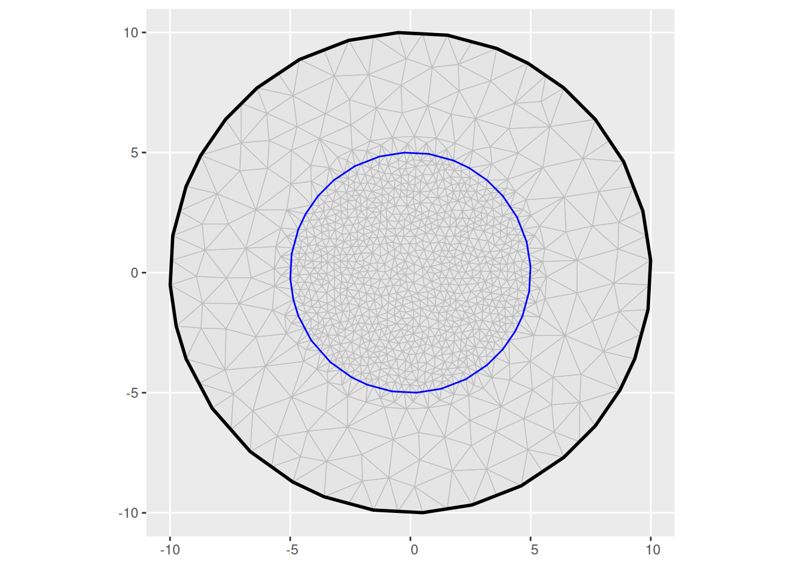

Random field and latent models
Finn Lindgren
2025-05-08
Source:vignettes/lecture_notes.Rmd
lecture_notes.RmdThe main references to the INLA method and the inlabru software are
- Rue, Martino, and Chopin (2009)
- Bachl et al. (2019)
- Finn Lindgren et al. (2024) (currently being revised)
The main references to the stochastic PDE method for constructing stationary and non-stationary continuous domain random field models represented by Gaussian Markov random fields are
- Finn Lindgren, Rue, and Lindström (2011)
- Finn Lindgren, Bolin, and Rue (2022)
- F. Lindgren et al. (2024)
Spatial dependence structures
Graph dependent structures; Markov random fields
Continuous variables; Gaussian MRFs
Covariance and Precision matrices
Multivariate vectors with covariance and precision representation of the dependence: \[ \begin{aligned} u &\sim N(\mu_u,\Sigma_u) \\ u &\sim N(\mu_u,Q_u^{-1}) \end{aligned} \] Observations with additive noise: \[ y|u \sim N(\eta = b + A u, Q_\epsilon^{-1}) \] Joint covariance: \[ \Sigma_{(u,y)} = \begin{bmatrix} \Sigma_u & \Sigma_u A^\top \\ A^\top \Sigma_u & A \Sigma_u A^\top + Q_\epsilon^{-1} \end{bmatrix} \]
Joint precision: \[ Q_{(u,y)} = \begin{bmatrix} Q_u + A^\top Q_\epsilon A & -A^\top Q_\epsilon \\ -Q_\epsilon A & Q_\epsilon \end{bmatrix} \]
Conditional distributions: \[ \begin{aligned} u|y &\sim N(\mu_{u|y},\Sigma_{u|y}) \\ \Sigma_y &= A \Sigma_u A^\top + Q_\epsilon^{-1} \\ \Sigma_{u|y} &= \Sigma_u - \Sigma_u A^\top \Sigma_y^{-1} A \Sigma_u \\ \mu_{u|y} &= \mu_u + \Sigma_u A^\top \Sigma_y^{-1} (y - b - A \mu_u) \\ \end{aligned} \] and \[ \begin{aligned} u|y &\sim N(\mu_{u|y},Q_{u|y}^{-1}) \\ Q_{u|y} &= Q_u + A^\top Q_\epsilon A \\ \mu_{u|y} &= \mu_u + Q_{u|y}^{-1} A^\top Q_\epsilon (y - b - A \mu_u) \end{aligned} \]
Gaussian processes/random fields
Basis function representations
(m <- fm_mesh_1d(
loc = seq(0, 1, length.out = 10),
degree = 2
))
#> fm_mesh_1d object:
#> Manifold: R1
#> #{knots}: 10
#> Interval: (0, 1)
#> Boundary: (neumann, neumann)
#> B-spline degree: 2
#> Basis d.o.f.: 9
ggplot() +
geom_fm(data = m)
(m1 <- fm_mesh_1d(m$mid, degree = 1))
#> fm_mesh_1d object:
#> Manifold: R1
#> #{knots}: 9
#> Interval: (0.05555556, 0.94444444)
#> Boundary: (neumann, neumann)
#> B-spline degree: 1
#> Basis d.o.f.: 9
ggplot() +
geom_fm(data = m) +
geom_fm(data = m1, xlim = m$interval)Changing the knot sequence but keeping the weights independent drastically changes the model.
(m_dense <- fm_mesh_1d(
loc = seq(0, 1, length.out = 100)^0.5,
degree = 2
))
#> fm_mesh_1d object:
#> Manifold: R1
#> #{knots}: 100
#> Interval: (0, 1)
#> Boundary: (neumann, neumann)
#> B-spline degree: 2
#> Basis d.o.f.: 99
ggplot() +
geom_fm(
data = m_dense,
weights = rnorm(fm_dof(m_dense), sd = 0.5),
knots = FALSE,
basis = FALSE
)The SPDE approach provides a method for constructing basis weight dependence structures that are consistent when changing the knot sequence and/or the basis functions, by projecting a continuously defined process model onto the function space defined by any given set of basis functions. The main requirement is that the basis functions need to be able to resolve features down to a certain scale, as determined by the correlation length of the process model.
(m_dense2 <- fm_mesh_1d(
loc = seq(0, 1, length.out = 1000),
degree = 2
))
#> fm_mesh_1d object:
#> Manifold: R1
#> #{knots}: 1000
#> Interval: (0, 1)
#> Boundary: (neumann, neumann)
#> B-spline degree: 2
#> Basis d.o.f.: 999
Q_m <- fm_matern_precision(m, alpha = 2, rho = 0.3, sigma = 0.5)
Q_m_dense <- fm_matern_precision(m_dense, alpha = 2, rho = 0.3, sigma = 0.5)
Q_m_dense2 <- fm_matern_precision(m_dense2, alpha = 2, rho = 0.3, sigma = 0.5)
ggplot() +
geom_fm(
data = m,
mappings = list(fun = aes(col = "m")),
weights = fm_sample(1, Q_m),
knots = FALSE,
basis = FALSE
) +
geom_fm(
data = m_dense,
mappings = list(fun = aes(col = "m_dense")),
weights = fm_sample(1, Q_m_dense),
knots = FALSE,
basis = FALSE
) +
geom_fm(
data = m_dense2,
mappings = list(fun = aes(col = "m_dense2")),
weights = fm_sample(1, Q_m_dense2),
knots = FALSE,
basis = FALSE
)
(m_dense2 <- fm_mesh_1d(
loc = seq(0, 1, length.out = 1000),
degree = 2
))
#> fm_mesh_1d object:
#> Manifold: R1
#> #{knots}: 1000
#> Interval: (0, 1)
#> Boundary: (neumann, neumann)
#> B-spline degree: 2
#> Basis d.o.f.: 999
Q_m <- fm_matern_precision(m, alpha = 1, rho = 0.3, sigma = 0.5)
Q_m_dense <- fm_matern_precision(m_dense, alpha = 1, rho = 0.3, sigma = 0.5)
Q_m_dense2 <- fm_matern_precision(m_dense2, alpha = 1, rho = 0.3, sigma = 0.5)
ggplot() +
geom_fm(
data = m,
mappings = list(fun = aes(col = "m")),
weights = fm_sample(1, Q_m),
knots = FALSE,
basis = FALSE
) +
geom_fm(
data = m_dense,
mappings = list(fun = aes(col = "m_dense")),
weights = fm_sample(1, Q_m_dense),
knots = FALSE,
basis = FALSE
) +
geom_fm(
data = m_dense2,
mappings = list(fun = aes(col = "m_dense2")),
weights = fm_sample(1, Q_m_dense2),
knots = FALSE,
basis = FALSE
)2D
(m <- fm_mesh_2d(
boundary = list(fm_nonconvex_hull_inla(cbind(0, 0), convex = 5)),
max.edge = 1
))
#> fm_mesh_2d object:
#> Manifold: R2
#> V / E / T: 233 / 642 / 410
#> Euler char.: 1
#> Constraints: Boundary: 54 boundary edges (1 group: 1), Interior: 0 edges
#> Bounding box: (-4.996242, 4.996242) x (-4.996242, 4.996242)
#> Basis d.o.f.: 233
ggplot() +
geom_fm(data = m)
(m2 <- fm_mesh_2d(
boundary = fm_extensions(cbind(0, 0), convex = c(5, 10)),
max.edge = c(0.5, 2)
))
#> fm_mesh_2d object:
#> Manifold: R2
#> V / E / T: 1002 / 2961 / 1960
#> Euler char.: 1
#> Constraints: Boundary: 42 boundary edges (1 group: 1), Interior: 88 interior edges (1 group: 1)
#> Bounding box: (-9.999247, 9.999247) x (-9.999247, 9.999247)
#> Basis d.o.f.: 1002
ggplot() +
geom_fm(data = m2)
bnd <- fm_extensions(cbind(0, 0), convex = c(5, 10))
(m3 <- fm_mesh_2d(
loc = fm_hexagon_lattice(bnd[[1]], edge_len = 0.5),
boundary = bnd,
max.edge = c(0.6, 2)
))
#> fm_mesh_2d object:
#> Manifold: R2
#> V / E / T: 602 / 1764 / 1163
#> Euler char.: 1
#> Constraints: Boundary: 39 boundary edges (1 group: 1), Interior: 74 interior edges (1 group: 1)
#> Bounding box: (-9.999247, 9.999247) x (-9.999247, 9.999247)
#> Basis d.o.f.: 602
ggplot() +
geom_fm(data = m3)Observations
Coupling latent variables to observations
While observations are almost always finite-dimensional, the latent variables and random effects are often infinite-dimensional, at least conceptually. This means that we need to be careful about how we link the observations to the latent variables. The benefit of this way of thinking is that it allows us to link misaligned observation structures to the same latent models, and we can jointly model different types of observations without necessarily having to adapt the latent structures.
Point/Georeferenced data
Classical geostatistical models with additive Gaussian noise: \[ y_i = \eta(s_i) + \epsilon_i \]
Poisson counts at given locations: \[ y_i \sim \text{Po}(e^{\eta(s_i)} ds) \]
Areal/aggregated data
If our observations were constructed by aggregation over a region \(B_i\), we need to determine how the aggregated values link to the continuous domain predictor.
For an averaged predictor with additive Gaussian noise: \[ y_i = \frac{1}{|B_i|}\int_{B_i} \eta(s) ds + \epsilon_i \] If our data consists of sums of Poisson counts at different locations, we get \[ y_{B_j} = \#\{i; s_i\in B_j\} \sim \text{Po}\left(\sum_{s_i\in B_j} e^{\eta(s_i)}\right) \] Note that this is not the same as aggregating the linear predictor itself, due to the nonlinear transformation. Also note that the situation is much more complicated for non-Poisson count models, since for example the sum of two independent Binomial variables, \(\text{Bin}(n_1, p_1)+\text{Bin}(n_2, p_2)\) is not itself Binomial unless \(p_1=p_2\).
If our data consists of counts of Poisson process point pattern data \(\{s_i;i=1\dots,N(\Omega)\}\), aggregated to regions \(B_j\), we can use the following model, directly based on the properties of a Posson point process. \[ y_{B_j} = \#\{i; s_i\in B_j\} \sim \text{Po}\left(\int_{B_j} e^{\eta(s)} \,ds\right) \]
Point pattern data
A Poisson point process is a random process that generates points in space such that the count of points in any given set \(B\) is Poisson distributed with expectation \(\Lambda(B)=\int_B \lambda(s)\,ds\), where \(\lambda(s)\) is the intensity function. Log-Gaussian Cox processes are obtained with \(\lambda(s)=e^{\eta(s)}\) when \(\eta(s)\) is a Gaussian random field. A Poisson process point pattern on a sampling region \(\Omega\) is a set with conditional distribution \[ \{s_i;s_i\in \Omega\} \sim \text{PoPr}\left(e^{\eta(\cdot)}\right) \] This means that for every set \(B\subseteq\Omega\), \[ \#\{s_i;s_i\in B\} \sim \text{Po}\left(\int_B e^{\eta(s)}\,ds\right) . \]
Latent Gaussian models for geostatistics
INLA implements models where each observation \(y_i\) is linked to an element of a linear predictor vector, \(\eta_i\), that typically controls the location parameter of the observation model, through a link function \(g(\cdot)\), with conditional independence, given \(\eta\).
The linear predictor
inlabru model structure
Classic INLA
Classic INLA model formulas are designed to closely
follow basic additive model formula syntax, such as
response ~ 1 + covariate1 + covariate2 + f(field, model = model_name)This defines a model with a linear predictor of the form \[ \eta_i = \beta_0 + \beta_1 x_{i,1} + \beta_2 x_{i,2} + u_i \] where \(\beta_0\), \(\beta_1\), and \(\beta_2\) are independent Gaussian scalars, and \(u_i\) is an unstructured or structured latent Gaussian random effect.
For INLA::f() components, the name of the input variable
also becomes the name of the effect.
For spatial models, the field variable would need to be
defined as an index into the mesh nodes, usually constructed with
inla.spde.make.index(), and inla.spde.make.A()
and inla.stack() used to construct the mapping information
required to inform INLA about how the nodes are linked to the
observations.
One of the aims of inlabru is to provide a more compact
and flexible syntax for defining models, by automatically handling the
mapping between structured latent variables and observations.
If you’ve used the “raw” INLA approach, please consult Converting
inla.spde.make.A calls into the bru_mapper
system.
inlabru
inlabru uses a conceptual information flow for model
definition:
- latent model components
- component effects
- predictor expressions
- observation models
Model components and effects
Model components are defined in a way that decouples the input data names from the effect of each model component. This allows the same variable to be involved in several components, without the need for creating dummies and copies.
Each component takes a general R expression as input, which is
evaluated in the context of the observation model data. The
bru_mapper() system is used to construct per-component
model matrices, which are then combined into a joint model matrix based
on the predictor expressions.
The basic syntax is
effect_name(input_variable, model = ...), which defines an
effect of the input variable, using the specified model. The model can
be any INLA model, such as "iid", "ar1",
"rw2", "bym2", a
inla.spde2.pcmatern() model object, or a user-defined model
(rgeneric/cgeneric). The standard INLA models have default mappers
associated with them, and a user-defined model can be associated with a
mapper using a bru_get_mapper() method, or explicitly
provided by the user.
The default input expression is the name of the components, so that
classical effects can be written as + covar, which is
shorthand for + covar(covar, model = "linear").
response ~ Intercept(1) +
covariate1 +
covariate2 +
field(geometry, model = inla.spde2.pcmatern(...))Here, the component effect is called field, the input is
the geometry variable from sf data, and the
mapper is an automatically constructed bru_mapper_fmesher()
mapper for the mesh used in the model definition.
There are two kinds of mappers; Non-indexed mappers provide raw
covariate values as input to INLA::f(), which is used for
fixed effects and rw1/rw2 models. Indexed
mappers are used to build models on integers or categories.
For more details on component definitions, see Defining
model components and the in-depth discussion of the mapper system,
including how to define more complex fixed effects components
(model="fixed" together with
bru_mapper_matrix() )and custom mappers, Customised
model components with the bru_mapper system.
Predictor expressions
For compatibility with basic glm formulas, inlabru by
default constructs a predictor expression that adds all the component
effects, with the response variable named to the left of the
~ operator. The following code,
bru(
response ~ Intercept(1) +
covariate1 +
covariate2 +
field(geometry, model = inla.spde2.pcmatern(...)),
...
)is equivalent to
bru(
~ Intercept(1) +
covariate1 +
covariate2 +
field(geometry, model = inla.spde2.pcmatern(...)),
bru_obs(
response ~ .,
...
)
)where ~ . is a shorthand for a complete additive model.
To limit which variables should be added, one can use the
used argument to bru_obs() to specify a
particular component subset.
In version 2.12.0, specifying an explicit expression
instead of the ~ . shorthand would cause the predictor to
be interpreted as a non-linear expression, and activate the iterative
linearisation method. From 2.12.0.9014, purely additive
expressions, such as response ~ Intercept + field, are
detected automatically.
Non-linear predictors and mappers
inlabru provides a flexible framework for defining
non-linear predictors through arbitrary R expressions, as well as
applying nonlinear transformations to the model component effects
directly.
For non-linear predictor models, inlabru uses an iterative linearisation method. The non-linear predictor \(\widetilde{\eta}(u)\) is replaced by a linear approximation \(\overline{\eta}^*(u) = b + A u\), constructed at the current best conditional posterior mode, \(u^*\). An INLA run yields a new candidate point \(\widehat{u}\). The next linearisation point is chosen by line-search, \[ \gamma = \arg\min_\gamma \left\| \widetilde{\eta}^*\left((1-\gamma) u^* + \gamma \widehat{u}\right) - \overline{\eta}^*(\widehat{u})\right\|_\text{(weighted by posterior variances)} \] defining a new linearisation point \(u^*_\text{new}=(1-\gamma) u^* + \gamma \widehat{u}\). The linearisation is repeated until convergence, i.e. when the changes in \(u^*\) are small in relation to the posterior standard deviations.
Use bru_convergence_plot(fit) to see post-run
convergence diagnostics, which can reveal potential problems and aid
debugging.
Non-linear expressions
A simple example is to use the exp() function to model a
positive additive effect:
comp <- ~ 0 + beta0(1) + field(geometry, model = matern)
form <- y ~ beta0 + exp(field)This can be particularly useful in multi-observation models with common effects:
comp <- ~ 0 +
beta0_A(1) +
beta0_B(1) +
beta_field_B(1) +
field(geometry, model = matern)
form_A <- y_A ~ beta0_A + field
form_B <- y_B ~ beta0_B + exp(beta_field_B) * fieldFor this type of scaling parameter, one should normally use a more
specific prior distribution for beta_field_B, which can be
done using a component marginal transformation mapper, see below.
Non-linear mappers
Aggregation
bru_mapper_aggregate() and
bru_mapper_logsumexp() are aggregation mappers for linear
and nonlinear aggregation functions, respectively, with averaging or
total sum/integral aggregation. From inlabru version
2.12.0.9013, the first method can be used to construct all
four aggregation types, via
bru_mapper_aggregate(type = ...)
When transforming interactively or in expressions, it may be
preferable to call the core fmesher functions
fm_block_eval() and fm_block_logsumexp_eval()
directly instead of having to create an explicit mapper object and
calling ibm_eval(mapper, ...).
Marginal transformations
To transform \(N(0,1)\) variables
marginally to other distributions, we can use the
bru_mapper_marginal() mapper. This applies careful
numerical transformations and computes the Jacobian of the
transformation, so that the predictor linearisation can compute the
overall linearised mapping between latent variables and observations
using the chain rule.
The following defines a beta_field_B component with
effect distributed as \(\text{Exp}(1)\):
comp <- ~ 0 +
beta0_A(1) +
beta0_B(1) +
beta_field_B(1,
prec.linear = 1,
marginal = bru_mapper_marginal(qexp, rate = 1)
) +
field(geometry, model = matern)
form_A <- y_A ~ beta0_A + field
form_B <- y_B ~ beta0_B + beta_field_B * fieldModel assessment
Posterior predictive checks
While global model diagnostic scores such as DIC and WAIC can be useful for basic model comparison, they are often not very informative about in what way one model might be better or worse than another, and lack interpretability, in particular about the spatial behavior of the model.
A more informative approach is to use posterior predictive checks, where we can compute both overall scores and spatially resolved scores.
For a general introduction to how to compute posterior observation
level prediction scores, see the inlabru package vignette
on Prediction
scores
Proper scoring rules
Posterior samples can be used to compute proper scoring rules. For each (new) observation \(y_i\) and posterior predictive model \(F_i\), a proper score \(S(F,y)\) is a function of the posterior predictive distribution \(F\) and the observation \(y\) such that if \(G\) is the true predictive distribution, the expectation \(S(F,G)=E_{y\sim G}[S(F,y)]\) fulfils \(S(F,G)\geq S(G,G)\), i.e. on average, the score is minimized when the predictive distribution is equal to the true distribution. The score is strictly proper if equality is obtained only when \(F=G\).
Generally easy to compute/estimate:
- Squared Error: \(S_\text{SE}(F,y)=[y - E_F(y)]^2\)
- Dawid-Sebastiani: \(S_\text{DS}(F,y)=\frac{[y - E_F(y)]^2}{V_F(y)}+\log[V_F(y)]\)
- Log-score: \(S_\text{LS}(F,y)=-\log p_F(y)\)
More difficult to compute/estimate:
- Absolute Error: \(S_\text{AE}(F,y)=\left|y - \text{median}_F(y)\right|\)
- CRPS: \(S_\text{CRPS}(F,y)=\int_\mathbb{R} \left[F(x) - \mathbb{I}(y\leq x)\right]^2 \,dx\)
The average prediction scores are defined by \[ \overline{S}(\{F_i\},\{y_i\}) = \frac{1}{N}\sum_{i=1}^N S(F_i,y_i) \] where \(N\) is the number of prediction observations.
When comparing models A and B, one should work with the collection of individual score differences, since the scores \(S(F_i^A,y_i)\) and \(S(F_i^B,y_i)\) are dependent, and we need to treat them as paired samples.
We define \[ S_\Delta(F_i^A,F_i^B,y_i) = S(F_i^B,y_i) - S(F_i^A,y_i) \] and get \[ V\left[\overline{S}(\{F_i^B\},\{y_i\}) - \overline{S}(\{F_i^B\},\{y_i\})\right] \approx \frac{1}{N} V\left[S(F_i^B,y_i) - S(F_i^A,y_i)\right] \]
Point process residuals
See the inlabru package vignette on Residual
Analysis of spatial point process models using Bayesian methods